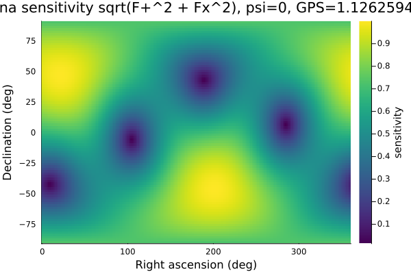
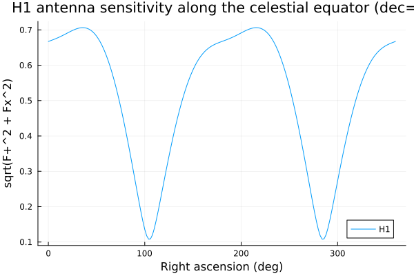
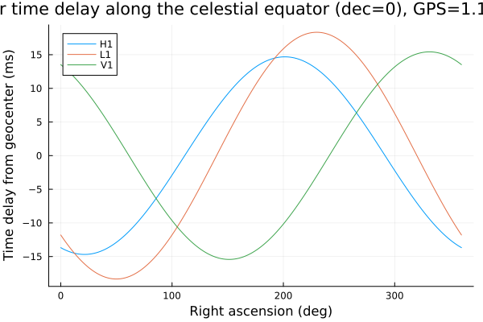

Detector Response
A gravitational-wave interferometer is not a uniformly sensitive microphone for spacetime strain: how strongly a given wave registers depends on where on the sky it comes from, how the wave is polarized, and (because the Earth rotates under a fixed detector) what time it arrives. This is the antenna pattern. It matters for two very practical reasons: a single detector can be sitting near a null in its own pattern for a particular source and see almost nothing of an otherwise loud signal, and comparing when a wave arrives at several detectors (each seeing the wavefront at a slightly different geocentric time delay, set by their physical separation) is the primary way multi-detector networks localize a source on the sky.
The detector modules (src/GravitationalWaveData/Detectors.jl, src/GravitationalWaveData/SiderealTime.jl) are a direct, verbatim port of LALSuite's own hardcoded detector table and XLALComputeDetAMResponse/ XLALTimeDelayFromEarthCenter, so results here are bit-for-bit comparable (up to the Float64-vs-REAL4 precision difference noted in Detectors.jl's header) with LALSuite and the pipelines built on it.
Everything below is pure geometry and runs instantly, offline — no GWOSC network fetch needed.
using GravitationalWaveData
using PlotsDetector geometry
GravitationalWaveData.jl ships three ready-made Detector instances — H1 (LIGO Hanford), L1 (LIGO Livingston), and V1 (Virgo) — each a channel-name prefix plus a DetectorGeometry (returned by geometry) holding an Earth-centered Cartesian vertex location (meters) and a dimensionless response tensor built from the detector's two arm directions. The geometry is plain bits, so GPU kernels take geometry(H1) rather than H1. Both are ported verbatim from LALSuite's lalCachedDetectors table (see src/GravitationalWaveData/Detectors.jl's module docstring for the exact source), not re-derived from published latitude/longitude/azimuth numbers, so this module can't drift from LALSuite's own values.
H1Detector("H1")geometry(H1).location # meters, Earth-centered Cartesian (ECEF-like)(-2.16141492636e6, -3.83469517889e6, 4.60035022664e6)The vertex location alone is enough to recover H1's approximate geocentric latitude/longitude (this is the geocentric angle from the Cartesian vector, a close but not identical quantity to the geodetic latitude usually quoted for LIGO Hanford, ~46.45 N, since Earth is an oblate spheroid, not a sphere):
h1_r = sqrt(sum(geometry(H1).location .^ 2))
h1_lat_deg = rad2deg(asin(geometry(H1).location[3] / h1_r))
h1_lon_deg = rad2deg(atan(geometry(H1).location[2], geometry(H1).location[1]))
(h1_lat_deg, h1_lon_deg)(46.262943153292014, -119.40765713887839)The response tensor is what actually contracts against a wave's polarization to produce the antenna pattern below — it encodes both arms' orientation in one object, following Anderson et al., PRD 63, 042003 (2001):
geometry(H1).response((-0.39261410005855846, -0.07761341236296912, -0.24738904467357226), (-0.07761341236296912, 0.31952406685263823, 0.2279978330803575), (-0.24738904467357226, 0.2279978330803575, 0.07309003320433549))Antenna response: F+/Fx at a few sky positions
compute_antenna_response(detector, ra, dec, psi, gps_time) -> (Fplus, Fcross) gives the plus- and cross-polarization antenna pattern factors for a wave from equatorial sky position (ra, dec) (radians), polarization angle psi (radians), arriving at gps_time (GPS seconds). We use GW150914's own trigger time throughout so every number below is anchored to a real, familiar event, even though nothing here needs real strain data.
gps = 1_126_259_462.4 # GW150914 trigger time (GPS seconds)1.1262594624e9The point directly overhead H1 ("zenith") at this instant has right ascension equal to the local Greenwich hour angle condition gha = 0, i.e. ra = gmst(gps_time), and declination equal to H1's own (geocentric) latitude computed above:
ra_zenith = mod2pi(gmst(gps))
dec_zenith = deg2rad(h1_lat_deg)
(rad2deg(ra_zenith), rad2deg(dec_zenith))(140.74897620710416, 46.262943153292014)Fplus_zenith, Fcross_zenith = compute_antenna_response(H1, ra_zenith, dec_zenith, 0.0, gps)
(Fplus_zenith, Fcross_zenith)(0.24239938194006283, -0.4274070477300541)Even directly overhead, F+/Fx are nowhere near their maximum possible magnitude of 1 — a quadrupolar antenna pattern is never uniformly "loudest" straight up, unlike e.g. a dish antenna. Now a sky position near H1's horizon at the same instant (right ascension offset 90 degrees from the zenith point, declination near the celestial equator):
ra_horizon = mod2pi(gmst(gps) + pi / 2)
dec_horizon = 0.0
Fplus_horizon, Fcross_horizon = compute_antenna_response(H1, ra_horizon, dec_horizon, 0.0, gps)
(Fplus_horizon, Fcross_horizon)(-0.46570413326293203, -0.49477808934703277)For this particular pair of points the near-horizon response is actually larger in magnitude than the overhead one — a reminder that "near the horizon" doesn't uniformly mean "less sensitive" the way it would for, say, a radio dish; the quadrupolar pattern's peaks and nulls are scattered across the whole sky, which is exactly what the full sky map below makes visible.
A convenient single number to compare sky positions by is the quadrature sum sqrt(Fplus^2 + Fcross^2), an overall (polarization-averaged-ish) sensitivity scale bounded in [0, 1]:
sqrt(Fplus_zenith^2 + Fcross_zenith^2), sqrt(Fplus_horizon^2 + Fcross_horizon^2)(0.49135958809638103, 0.6794745745324685)The full antenna pattern across the sky
Sweeping (ra, dec) over the whole sky at fixed gps_time/psi and plotting sqrt(Fplus^2 + Fcross^2) as a heatmap reveals H1's characteristic four-lobed quadrupolar pattern directly, rather than spot-checking a handful of points.
ras = range(0, 2pi; length=181)
decs = range(-pi / 2, pi / 2; length=91)
sensitivity = [
let (fp, fc) = compute_antenna_response(H1, ra, dec, 0.0, gps)
sqrt(fp^2 + fc^2)
end
for dec in decs, ra in ras
]
size(sensitivity) # (length(decs), length(ras)) -- rows=declination, columns=right ascension(91, 181)p1 = heatmap(rad2deg.(ras), rad2deg.(decs), sensitivity;
xlabel="Right ascension (deg)", ylabel="Declination (deg)",
title="H1 antenna sensitivity sqrt(F+^2 + Fx^2), psi=0, GPS=$(gps)",
color=:viridis, colorbar_title="sensitivity");The bright lobes are sky directions H1 is most sensitive to for this polarization angle; the dark bands running between them are near-nulls (sqrt(Fplus^2 + Fcross^2) close to 0) where a wave from that direction would barely register at all, regardless of its intrinsic amplitude. Changing psi rotates this whole pattern in place (the polarization angle is a genuine third degree of freedom the pattern depends on, not just decoration) — a wave from a fixed sky position can shift from near-null to near-peak response purely as psi varies:
p1
A 1-D slice at fixed declination makes the same lobed structure easy to read off as a plain line plot instead of a heatmap — here, the sensitivity profile along the celestial equator (dec = 0) as right ascension sweeps through a full rotation:
equator_sensitivity = [
let (fp, fc) = compute_antenna_response(H1, ra, 0.0, 0.0, gps)
sqrt(fp^2 + fc^2)
end
for ra in ras
]
plot(rad2deg.(ras), equator_sensitivity;
xlabel="Right ascension (deg)", ylabel="sqrt(F+^2 + Fx^2)",
title="H1 antenna sensitivity along the celestial equator (dec=0)",
label="H1", legend=:bottomright)
Time delay from geocenter
time_delay_from_geocenter(detector, ra, dec, gps_time) gives the light-travel-time offset (seconds) between the geocenter and a detector for a wave from (ra, dec) arriving at gps_time — the geometric quantity underlying multi-detector coincidence/localization: a real signal shows up in each detector's data offset by (approximately, ignoring the wave's own finite-frequency phase evolution) exactly this amount relative to when it crosses the Earth's center.
Sign convention (matches LALSuite exactly, per docs/CONVENTIONS.md and this function's own docstring): positive means the wavefront arrives at the detector after the geocenter — i.e. t_detector = t_geocenter + time_delay_from_geocenter(...).
Using the same zenith-at-H1 sky position from above, evaluated for all three detectors at the shared GW150914 trigger time:
for (name, det) in (("H1", H1), ("L1", L1), ("V1", V1))
td = time_delay_from_geocenter(det, ra_zenith, dec_zenith, gps)
println(name, ": ", round(td * 1000; digits=3), " ms")
endH1: -6.103 ms
L1: -7.599 ms
V1: -21.037 msH1's own delay for its own zenith direction is small (a wave from directly overhead arrives at H1 close to when it arrives at the geocenter, since H1 sits only one Earth-radius away from center along that exact line — the delay isn't exactly zero because the light-travel geometry depends on the full 3-D vertex location, not just distance-from-center along the local vertical). L1 and V1, sitting thousands of kilometers away from H1 and from each other, see a wave from that same direction at meaningfully different times — this is precisely the information a multi-detector network uses for sky localization: for a given pair of detectors, every sky direction consistent with an observed arrival-time difference traces out a ring on the sky (a cone of constant delay), and intersecting the rings from several detector pairs narrows a source down to a small patch, in the same spirit as GPS trilateration.
Sweeping right ascension at fixed declination (again dec = 0, the celestial equator) shows how each detector's delay traces out its own distinct sinusoid-like curve as the source direction rotates through the sky — the pairwise differences between these three curves at any given right ascension is exactly the coincidence-timing information a localization pipeline uses:
delays = Dict(
name => [time_delay_from_geocenter(det, ra, 0.0, gps) * 1000 for ra in ras]
for (name, det) in (("H1", H1), ("L1", L1), ("V1", V1))
)
p2 = plot(rad2deg.(ras), delays["H1"]; label="H1", xlabel="Right ascension (deg)",
ylabel="Time delay from geocenter (ms)",
title="Geocenter time delay along the celestial equator (dec=0), GPS=$(gps)")
plot!(p2, rad2deg.(ras), delays["L1"]; label="L1", ylabel="Time delay from geocenter (ms)")
plot!(p2, rad2deg.(ras), delays["V1"]; label="V1", ylabel="Time delay from geocenter (ms)")
This page was generated using Literate.jl.